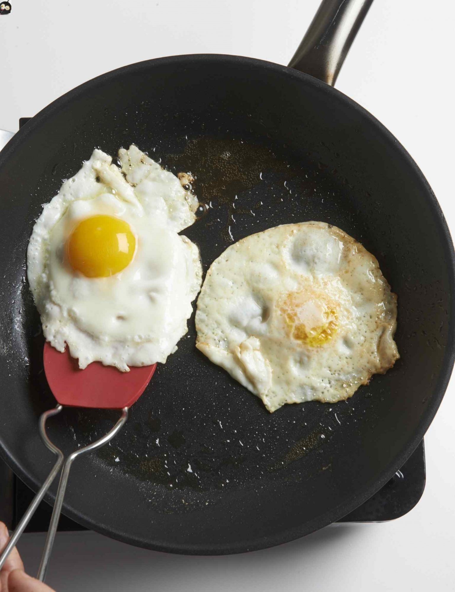

Fried Eggs

Description
Frying eggs is one of those seemingly straightforward techniques every cook needs to know. But, for many, it's all broken yolks and slimy whites. (Which sounds kind of like a country song, doesn't it?)
Let's take a minute to marvel at this amazing food, a protein powerhouse that goes from raw to cooked in minutes. One of the reasons many cooks find eggs a challenge to fry is that there are two separate types of protein in this handy little package. The lean whites cook more quickly than the creamy yolks. Overcook and end up with rubbery whites. Under-cooked whites are slimy. To hit the sweet spot, a two-pronged approach is needed. Actually, there are several two-pronged approaches that work well.
Directions for Sunny Side Up Eggs
- Heat a non-stick or a cast iron skillet over medium-high heat with 1 tablespoon cooking oil until the oil starts to shimmer. If using butter, wait until it stops sizzling, but before it starts to turn brown.
- Add the egg to the skillet.
- Wait until the white begins to set, and then use a fork to gently break up the white closest to the yolk, being careful not to pop the yolk. By doing this, you're pulling the layer of white that surrounds the yolk out towards the edge. This smooth move is used by diner cooks and chefs to cook the white evenly. It also means the egg won't have that gooey slime that turns so many people off with sunny side eggs.
- No need to flip; serve the egg when cooked so that whites are uniformly white (no longer clear). Season with salt and pepper to taste.